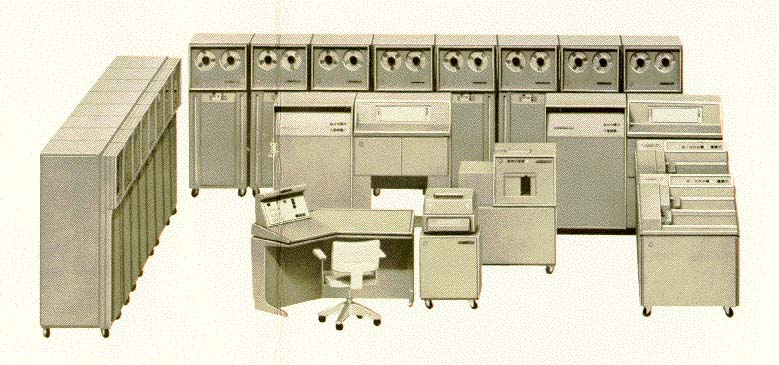

Burroughs B5000 Computer
Introduced in 1961, the Burroughs B5000 was a groundbreaking mainframe computer that fundamentally transformed how hardware and software interact. Unlike rival systems of its era that prioritized raw speed and relied on complex assembly language, the B5000 was designed from the ground up to efficiently run high-level programming languages—specifically ALGOL and COBOL—with no assembler even provided. Spearheaded by Robert Barton, its innovative architecture introduced stack-based processing, virtual memory, and symmetric multiprocessing, allowing programs to run seamlessly across multiple processors without needing to be rewritten. By seamlessly integrating its operating system (the Master Control Program, or MCP) with hardware-enforced memory protection and tagged data descriptors, the B5000 laid the foundational blueprint for modern computer security, compilers, and operating systems.